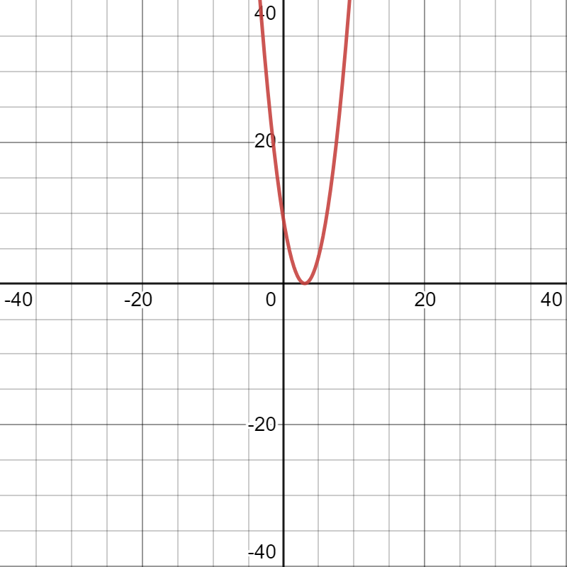

Given polynomial p(x)=x2-6x+9
list of values of p(x):
| x | -1 | 0 | 1 | 2 | 3 | 4 |
| x2 | 1 | 0 | 1 | 4 | 9 | 16 |
| 6x | -6 | 0 | 6 | 12 | 18 | 24 |
| x2-6x | 7 | 0 | -5 | -8 | -9 | -8 |
| 9 | 9 | 9 | 9 | 9 | 9 | 9 |
| p(x) | 16 | 9 | 4 | 1 | 0 | 1 |
| (x,y) | (-1,16) | (0,9) | (1,4) | (2,1) | (3,0) | (4,1) |
Now,lets locate the points listed above on a graph paper
Result:We observe that the graph cuts the X-axis at(3,0).
So,the zeros of the given polynomial are same i.e,3
Justification:
Given p(x)=x2-6x+9
x2-3x-x+9=0
x(x-3)-(x-)=0
x-3=0 and x-=0
x=3 and x=